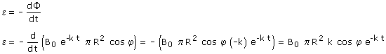
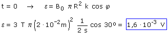

b) Conocemos la expresión del flujo en función del tiempo, por tanto calculamos la f.e.m instantánea  Ahora particularizamos para t = 0 (Primero se deriva y después se particulariza para un determinado valor del tiempo, no al revés)  |